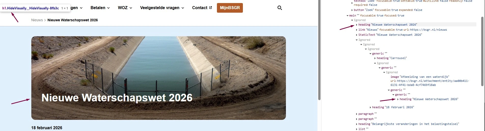

#1 - Verborgen koppen dupliceren de zichtbare koppen

Op veel pagina's staan verborgen koppen die een zichtbare kop verderop de pagina dupliceren. Deze koppen zijn niet te zien voor ziende bezoekers, maar een schermlezer kondigt ze wel aan. Op de pagina https://bsgr.nl/nieuwe-waterschapswet-2026 staat bijvoorbeeld een verborgen h1 "Nieuwe Waterschapswet 2026" boven het kruimelpad. Verderop op de pagina kondigt een h3 met dezelfde tekst de inhoud aan. Bezoekers die een schermlezer gebruiken horen dezelfde kop twee keer en kunnen niet bepalen welke van de twee bij de inhoud hoort.
Hetzelfde probleem doet zich voor op:
- https://bsgr.nl/vergaderingen-algemeen-bestuur-2026
- https://bsgr.nl/gemeente-gouda
- https://bsgr.nl/woz-waarde
- en andere pagina's.
User story
Ik lees de website met een schermlezer. Als ik door de koppen navigeer, hoor ik dezelfde kop twee keer. Ik kan niet bepalen welke kop bij de inhoud hoort. Ik verwacht dat elke kop één keer voorkomt en zijn eigen sectie aankondigt.
Hoe te testen
Open de WCAG Radar en zet de optie "Koppen en structuur" aan. Controleer of er koppen dubbel op de pagina staan. Navigeer daarna met een schermlezer door de koppen en controleer of geen enkele kop twee keer voorkomt.
Oplossing
Verwijder de verborgen dubbele kop. Zet de zichtbare kop op de juiste plek in de HTML en geef hem het juiste niveau: de kop die de inhoud aankondigt hoort een h1 kop te zijn en geen h3 kop.